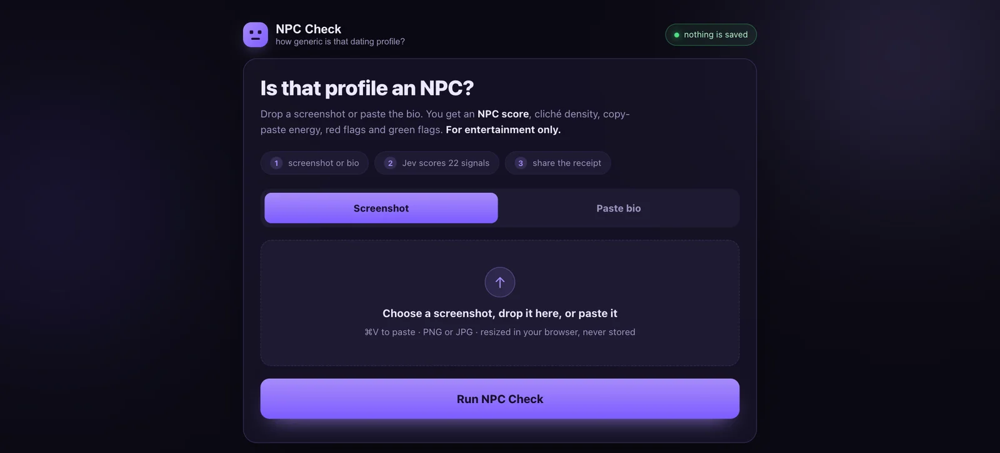

体験
判断の結果を、黙って何かに使うのではなく、読める「レシート」として返す。調査記録によれば、結果の画面には「What we read」（何を読み取ったか）、共有と書き出し、「Scan another」がある。
- 総合点だけで終わらず、内訳と、該当した決まり文句を並べる。点数の理由をたどれる。
- 入力の前から、保存しないことと、エンターテインメント目的であることを示している。結果の画面にもエンターテインメント目的の注意があると、調査記録は述べている。
- 評価の対象は、多くの場合、利用者本人ではなく他人のプロフィールである。共有の導線があるため、点数が本人の知らない場所で使われうる。
- 画像と文の両方を受け付ける。画像からどこまで読み取れているかは、「What we read」で確かめる設計になっている。
キャプチャ
{kind=link}

（原寸の画像を開く）見る箇所右上の「nothing is saved」、説明文と「For entertainment only.」、3つの手順（screenshot or bio、Jev scores 22 signals、share the receipt）、ScreenshotとPaste bioの切り替え、画像欄の「never stored」
入力から画面の変化まで
-
判断への入力
マッチングアプリのプロフィールのスクリーンショット、または貼り付けた自己紹介文。画面は、画像をブラウザ内で縮小し、保存しないと説明している。
-
Jevの判断
画面の手順は「Jev scores 22 signals」と書いている。22個の観点の中身は、入力画面には出ていない。
-
結果がUIをどう変えるか
画面の説明では、NPC score、cliché density、copy-paste energy、red flags、green flags。調査時の操作では、総合74、NPC energy 80%、cliché density 89%と、6つの内訳、該当した決まり文句6件、red flagとgreen flagの件数が出た。
- 判断型の見立て
- Score推定
- 公開画面は「Jev scores 22 signals」と述べるが、22個の観点の質問型は画面から確認できない。
Jevとの適合
短い文を、多数の狭い観点で同時に評価し、アプリ側で集計する使い方は、Jevに向く。ただし「ありきたり」という基準は主観的で、点数は人物の評価ではない。注意書きとプライバシーの説明を、結果と同じ強さで見せる必要がある。
確認範囲と未確認事項
作者の投稿と公開サイトを確認。掲載した画面は公開サイトの入力画面で、結果の画面ではない。結果の値は調査時の操作記録による。サイトは「For entertainment only」と明記している。他人を点数で評価する道具は、過信や嫌がらせにつながりうる。
- 確認済み公開サイトの入力画面（説明文、3つの手順、入力の切り替え、保存しない旨、エンターテインメント目的の表記、「Powered by Jev from TypeSafe」）、作者の投稿。結果の値（74、80%、89%、決まり文句6件）と結果画面の構成は2026-09-21の調査時の操作記録による
- 未検証22個の観点の中身と型、集計の式、画像入力の読み取り精度、保存しないという説明の実装、同じ入力での再現性
- 推定扱い質問型（Scoreと見立て）。観点ごとの判断をアプリ側で集計しているという読み方
- 引用公開サイト画面を2026-09-21に必要範囲で取得。権利は作者に帰属する